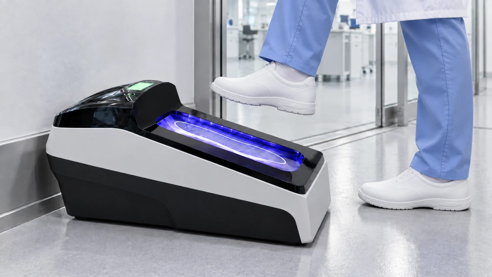
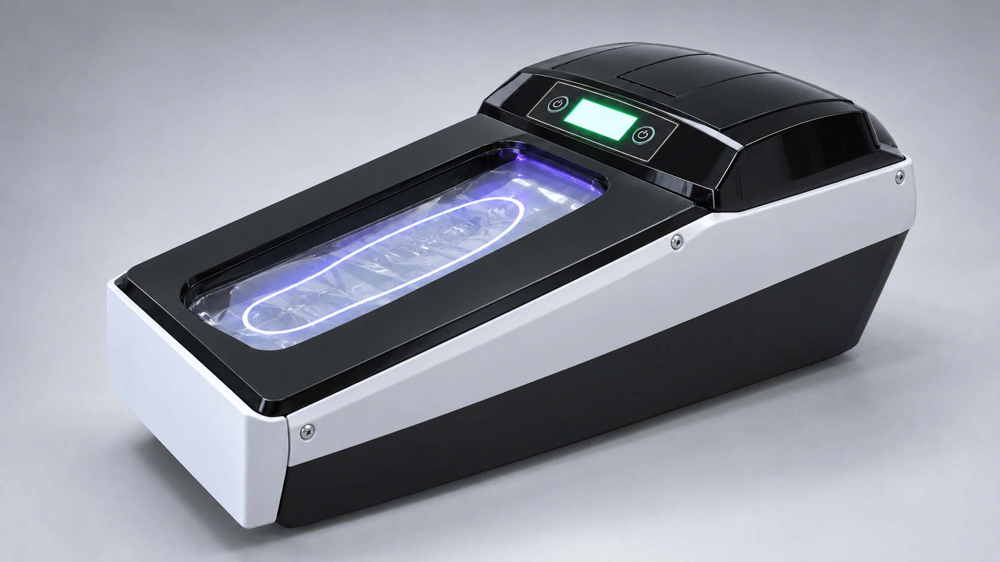
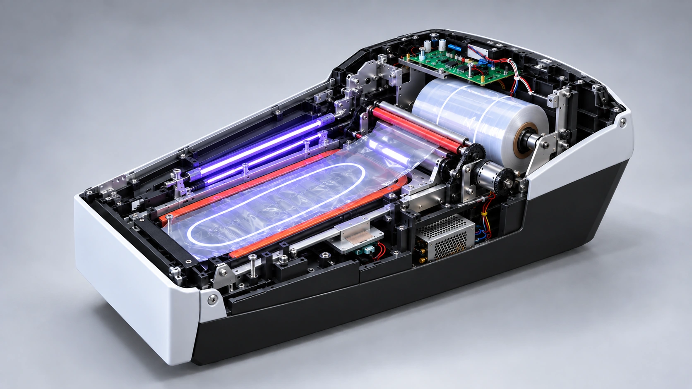

Slobodne ruke
Postavljanje zaštite pokreće se korakom na platformu.

ELIO / AUTOMATSKA ZAŠTITA ĐONA
Automatska zaštita đona. Pažljivo osmišljena rutina. Pogledajte mehanizam koji stoji iza svakog koraka.


Postavljanje zaštite pokreće se korakom na platformu.
Termoskupljajuća folija prilagođava se donjem delu obuće.
Jedno mesto za primenu zaštite pre ulaska u prostor.
Pritisnite i zadržite na uređaju.
Za tri sekunde, folija prati đon.
ELIO ulazu daje prepoznatljiv, ekskluzivan detalj. Elegantan uređaj i uredna rutina ostavljaju lep, čist i profesionalan prvi utisak — već pri ulasku. Izaberite oblast primene.
Za zaposlene i posetioce na prelasku u zone u kojima je predviđena zaštita obuće.
Procenite koliko folije je potrebno za vaš dnevni broj ulazaka. Proračun koristi oko 1.000 aplikacija po rolni i dve aplikacije po osobi.
Stvarna potrošnja zavisi od načina upotrebe i specifikacije rolne. Zaštita obuće dopunjuje higijenski protokol ustanove.
Folija se postavlja na đon i donji deo obuće. Prikaz trećeg koraka pokazuje kako izgleda nakon primene.
Na stabilnu podlogu, uz ulaz u zonu u kojoj je predviđena zaštita obuće, sa dovoljno prostora za bezbedno korišćenje. Postavljanje uskladite sa uputstvom proizvođača.
Odgovarajuća folija, napajanje i redovna kontrola i održavanje prema uputstvu proizvođača.
Ne. Zaštita đona predstavlja dodatni korak i koristi se u skladu sa pravilima i higijenskim protokolom vašeg prostora.